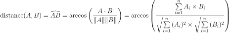
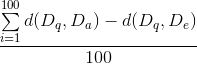

Finding Similar Items - Fighting Spam
Goal
In this exercises we will implement a probabilistic data structure which speeds up the search for items similar to the query. In particular, we will build a data structure to find e-mail messages similar to a newly arrived message. Then, we will use the similar messages to decide whether the new message is spam.
Prerequisites
In principle, the content presented during the lectures suffices to implement this task. However, it is certainly beneficial to study the corresponding text in chapter 3 of the Mining of Massive Datasets book. You can also watch the videos of the online course related to LSH and k-NN clasifiers (in module 3). To get a general idea about how to start, read https://www.andrew.cmu.edu/course/15-121/labs/HW-4%20Document%20Distance/lab.html.
Task
The task consists of four parts. First, you need to make an exact nearest neighbor search. Then you create the approximate search and evaluate its quality. In the last part you use the created search functionality to detect spam and measure your accuracy. This task is performed individually or as a pair.
For this task, we will use the e-mails from the Enron spam dataset, which can be downloaded from here (you need Enron1-Enron6, totaling 17 mb).
To measure the distance between two e-mails, we use the angle between their vector representations.
More concrete, we will use what is called cosine distance in the course book, and 1 - [Angular similarity] on Wikipedia.
Wikipedia also gives a few remarks about the confusing name of this metric.

Alternatively, you can opt for using the Jaccard distance between sets containing the words of the messages. In that case, you use min-hashing for the approximation.
You are free to work using the programming language you want.
Part 0
Write a function/method to convert an e-mail message to a vector. First decide which datatype you want to use for the vector. The vector will be large and sparse (containing a lot of zeros). Examples of suitable data structures are maps, multisets, or specific sparse vector datatypes. Then, you need to choose a normal (non cryptographic) hash function like murmurhash3 or something else with a fixed seed. Now, you can write your converter as follows:
function convert (string email) : sparsevector
email = email.substring(8) //get rid of the 'Subject:' part
words = splitOnWhiteSpace(email) //note: we keep punctuation, etc. these might actually be good indicators of spam
sparsevector V
for word in words
index = hash(word)
V[index] += 1
return v
(You can also keep multisets of the strings directly, but then you have to adapt your definitions for dot product and norm accordingly) There are many preprocessing/cleaning steps possible, but you’re advised to keep it simple and only improve on this step if you have time left. If the sparsevector is empty, then you can either ignore the message or just add one fixed element (0) to it. This way you avoid division by zero in later computations. Since this processing is fairly simple, there is no need to store the result of the preprocessing to an intermediate file.
Part I
Implement an exact nearest neighbor search. In order to do this you will need to
- Compute the vectors for 1000 emails
- Compute the vector of one more email (the query -
Dq) - Calculate the distance to each of the emails in the set of 1000
- Find the message (
De) in the set with the smallest distance to the query
The names Dq, De, and (in part II) Da stand for query – the message for which we want to find near neighbors, the exact nearest neighbor, and the nearest neighbor as found by the approximate algorithm.
Part II
Implement an approximate nearest neighbor search. Using random hyperplane hashing, it is possible to reduce the amount of messages which we need to compare with.
First, try to implement the method using just one hyperplane, in the end you need to extend for more hyperplanes.
Creating the (random) hyperplane is not trivial. To define it, you would need to create a (random) normal vector on the hyperplane. This normal vector is of the same dimension as the messages (e.g., 2^64 – one dimension higher as the hyperplane itself) and each dimension would contain a random number (in a range -a to a, i.e., both positive and negative numbers). The problem is that you cannot store such vector in memory, nor can you compute enough random numbers to even create it (it would take about 2000 years to compute that many random numbers). So, we will need to do something else.
There are two observations which will help us.
- We do not need all the numbers from the hyperplane. To compute a dot product with it, we only need the value for the dimensions which represent actual words. So we only need to compute a random number for these dimensions.
- The way these random numbers are computed does not really matter, as long as they are uniformly distributed. So, we can use a hash function to compute these random numbers.
Hence, what we will do is use a hash function with a fixed seed and compute the random numbers when needed. So, to get the value for a certain index, we hash the index number. For instance, if you need n[4500], then you compute hash(4500) and take the outcome as the value of your random vector. This is fine because the outcome of the hash function will always be the same for the same input and the output will be uniformly random (make sure your hash function also returns negative values, if not, subtract a constant for it such that also negative numbers have a 50% probability of occurring .) When you have to work with multiple hyperplanes later on, you need to specify a different seed for each of the hash functions (i.e, each hyperplane needs to be different).
The algorithm goes roughly as follows:
- Compute the vectors for a set of messages as in the previous part (for example 1000) in memory
- Then, initialize (seed) the hash function representing the normal on the hyperplane.
- Find out on which side of the hyperplane each message is. All messages have to be hashed with the same hyperplane. Create a dictionary/map which associates the keys (buckets)
aboveandbelowwith the set of messages which are above and below the hyperplane. (You can represent above and below with a boolean or an enumeration type. See also hints below.)- A message which is on the same side as the random vector, will have a positive dot product when multiplied with it.
- A message on the other side will result in a negative dot product.
- A message exactly on the hyperplane (or very close when calculating with floating point numbers) will result in a zero dot product. This is however so rare that you can just return above.
- To compute the dot product, only compute the summation over the indexes which are non-zero in the message vector. (If you compute the summation over all 2^64 elements, you will be retired long time before the first dot product computation finishes).
- Beware of overflows while computing the dotproduct.
- Load one more message (the query)
- Find the subset in which to look by finding out whether the query lies above or under the hyperplane.
- Now, perform the search as you created in part I, but using only the subset of messages, resulting in the message
Da. If there are no messages in the subset, then the distance isπ/2=3.1415926/2.
Once this works (commit to git), you should extend it to multiple hyperplanes.
For example, for two hyperplanes, instead of only having a separation of the space in two parts, the space gets split in 4.
In that case, the buckets will be (above, above), (above,below), (below, above), and (below,below).
Because of representation options (see hints), you can limit yourself to up to 60 hyperplanes.
In the end you check whether you can keep the signatures of all messages from dataset 1 till 5 (~30,000 messages) in memory.
Part III
The method developed in part two might be faster than the linear search, but a certain amount of error is made. The goal of this part is to find out the size of this error. To measure the error, we will simply calculate the average absolute error for a set of 100 random queries.
Work as follows:
- Load the messages from the first five datasets in memory
- Load 100 messages (50 spam, 50 genuine) from the sixth dataset - the query messages
- For each query message find the distance of the exact nearest neighbor.
- Record the time needed for this computation
- For numberOfHyperplanes in [1, 2, 4, 8, 16, 32]: #You can go up till 60/64 if it does not take too much time to compute
- Create the data structure from Part II with numberOfHyperplanes hyper planes
- Start a timer
- For each query message
- Find the result and distance for the approximate search
- Stop the timer
- Calculate the average error for the current number of hyperplanes 
Create a chart in which you plot the error and timing (2 curves) in function of the number of planes. Also add the time needed for the exact computation.
Part VI
Now, we have an efficient method to find similar messages. We will use this to create the spam detector. First, you should create 4 different indexes, each using 16 hyperplanes. (note: this amount might still change) Then, load all messages from datasets 1 till 5 into each index.
Now, try to detect spam mail as follows:
- for each message in the 6th dataset
- Collect all messages which are located in the same bucket in any of the indexes.
- Choose one of these strategies
- 1-nearest: give the message the label of the nearest message among the collected ones. (this seems to work best among these strategies).
- pessimistic: if no similar messages are found or any of the found messages is spam, mark the new message as spam.
- optimistic: if no similar messages are found or any of the found messages is genuine, mark the new message as genuine.
- majority: give the new message the label which the majority of the found messages has.
- In case the collection of potentially close messages is empty, you will have to choose whether you mark the message a spam or not.
- Check whether this classification was correct.
Four numbers should be reported: the strategy and the percentage of spam marked as spam, spam marked as genuine, genuine marked as spam, and genuine marked as genuine.
Returning the task
- Everything is returned in a git repository
- Yousource : https://yousource.it.jyu.fi/
- Make a repository and add the teacher as a collaborator.
- You can also keep using the repository you used for the first task.
- If unfamiliar with git
- Read The Pro Git book on-line and instructions on yousource
- Ask in group
- The deadline for this task is January 15.
Hints
-
Use small sets (10000 messages or less) of data during development.
-
For the programming language, you might just want to choose the one you are most familiar with. Depending on the chosen language the teacher will be able to help more (or less) with language specific issues.
-
Be careful when using a library to calculate the cosine distance. Read the wikipedia article or the section in the book about the distance. Most built-in implementations will calculate something different.
-
When calculating the arccos, it might happen that due to rounding errors the argument becomes slightly greater than one. The evaluation will (should) then fail. You can check the argument before, and if it is slightly greater than one, make it one.
-
Randomized algorithms are difficult to debug. Make it somehow possible by fixing the seed of the random number generator. At least each run will be the same.
-
Be careful with integer overflows and automatic type conversion (especially in dynamically typed languages).
-
You have many choices to represent the result of hashing using multiple hyperplanes. The most performant one is the use of a integer with 64 bits, where each bit represents one hash function. Then,
1isaboveand0isbelow. Alternatively, you can use a type which can be used in a map/dictionary in the language you are using (like a tuple in python or a list in Java). In a language like Java, you could use an enumLocationwith valuesaboveandbelowand aMap<List<Location>, List<Email>>, or a multimap (available in the Guava library). -
When you make a query using an message which is itself in the dataset, you should be able to find exactly that message.